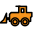

<!doctype html>
<html lang="en">
    <head>
        <meta charset="utf-8">
        <meta http-equiv="X-UA-Compatible" content="IE=edge">
        <meta name="viewport" content="initial-scale=1,user-scalable=no,maximum-scale=1,width=device-width">
        <meta name="mobile-web-app-capable" content="yes">
        <meta name="apple-mobile-web-app-capable" content="yes">
        <link rel="stylesheet" href="css/leaflet.css">
        <link rel="stylesheet" href="css/qgis2web.css"><link rel="stylesheet" href="css/fontawesome-all.min.css">
        <link rel="stylesheet" href="css/MarkerCluster.css">
        <link rel="stylesheet" href="css/MarkerCluster.Default.css">
        <style>
        html, body, #map {
            width: 100%;
            height: 100%;
            padding: 0;
            margin: 0;
        }
        </style>
        <title></title>
    </head>
    <body>
        <div id="map">
        </div>
        <script src="js/qgis2web_expressions.js"></script>
        <script src="js/leaflet.js"></script>
        <script src="js/leaflet.rotatedMarker.js"></script>
        <script src="js/leaflet.pattern.js"></script>
        <script src="js/leaflet-hash.js"></script>
        <script src="js/Autolinker.min.js"></script>
        <script src="js/rbush.min.js"></script>
        <script src="js/labelgun.min.js"></script>
        <script src="js/labels.js"></script>
        <script src="js/leaflet.markercluster.js"></script>
        <script src="data/Eventos_1.js"></script>
        <script>
        var map = L.map('map', {
            zoomControl:true, maxZoom:28, minZoom:6
        })
        var hash = new L.Hash(map);
        map.attributionControl.setPrefix('<a href="https://github.com/tomchadwin/qgis2web" target="_blank">qgis2web</a> &middot; <a href="https://leafletjs.com" title="A JS library for interactive maps">Leaflet</a> &middot; <a href="https://qgis.org">QGIS</a>');
        var autolinker = new Autolinker({truncate: {length: 30, location: 'smart'}});
        var bounds_group = new L.featureGroup([]);
        function setBounds() {
            if (bounds_group.getLayers().length) {
                map.fitBounds(bounds_group.getBounds());
            }
        }
        map.createPane('pane_OSMBW_0');
        map.getPane('pane_OSMBW_0').style.zIndex = 400;
        var layer_OSMBW_0 = L.tileLayer('http://tiles.wmflabs.org/bw-mapnik/{z}/{x}/{y}.png', {
            pane: 'pane_OSMBW_0',
            opacity: 1.0,
            attribution: '',
            minZoom: 6,
            maxZoom: 28,
            minNativeZoom: 0,
            maxNativeZoom: 18
        });
        layer_OSMBW_0;
        map.addLayer(layer_OSMBW_0);
        function pop_Eventos_1(feature, layer) {
            var popupContent = '<table>\
                    <tr>\
                        <td colspan="2">' + (feature.properties['DESCRIPCIÓN'] !== null ? autolinker.link(feature.properties['DESCRIPCIÓN'].toLocaleString()) : '') + '</td>\
                    </tr>\
                    <tr>\
                        <th scope="row">Fuente</th>\
                        <td>' + (feature.properties['FUENTE'] !== null ? autolinker.link(feature.properties['FUENTE'].toLocaleString()) : '') + '</td>\
                    </tr>\
                    <tr>\
                        <th scope="row">Fecha</th>\
                        <td>' + (feature.properties['FECHA'] !== null ? autolinker.link(feature.properties['FECHA'].toLocaleString()) : '') + '</td>\
                    </tr>\
                    <tr>\
                        <th scope="row">Categoría(s)</th>\
                        <td>' + (feature.properties['CATEGORIAS'] !== null ? autolinker.link(feature.properties['CATEGORIAS'].toLocaleString()) : '') + '</td>\
                    </tr>\
                </table>';
            layer.bindPopup(popupContent, {maxHeight: 400});
        }

        function style_Eventos_1_0(feature) {
            switch(String(feature.properties['q2wHide_CAT1'])) {
                case 'Avance Extractivista':
                    return {
                pane: 'pane_Eventos_1',
        rotationAngle: 0.0,
        rotationOrigin: 'center center',
        icon: L.icon({
            iconUrl: 'markers/7-extractivismo.svg',
            iconSize: [26.599999999999998, 26.599999999999998]
        }),
                interactive: true,
            }
                    break;
                case 'Control territorial':
                    return {
                pane: 'pane_Eventos_1',
        rotationAngle: 0.0,
        rotationOrigin: 'center center',
        icon: L.icon({
            iconUrl: 'markers/2-control_territorial.svg',
            iconSize: [26.599999999999998, 26.599999999999998]
        }),
                interactive: true,
            }
                    break;
                case 'Defensa espiritual':
                    return {
                pane: 'pane_Eventos_1',
        rotationAngle: 0.0,
        rotationOrigin: 'center center',
        icon: L.icon({
            iconUrl: 'markers/1-religion.svg',
            iconSize: [26.599999999999998, 26.599999999999998]
        }),
                interactive: true,
            }
                    break;
                case 'Necesidades y Solidaridad territorial (Trafkintu)':
                    return {
                pane: 'pane_Eventos_1',
        rotationAngle: 0.0,
        rotationOrigin: 'center center',
        icon: L.icon({
            iconUrl: 'markers/6-necesidades.svg',
            iconSize: [26.599999999999998, 26.599999999999998]
        }),
                interactive: true,
            }
                    break;
                case 'Patrimonio sanitario ancestral':
                    return {
                pane: 'pane_Eventos_1',
        rotationAngle: 0.0,
        rotationOrigin: 'center center',
        icon: L.icon({
            iconUrl: 'markers/3-sanitarias.svg',
            iconSize: [26.599999999999998, 26.599999999999998]
        }),
                interactive: true,
            }
                    break;
                case 'Soberanía alimentaria':
                    return {
                pane: 'pane_Eventos_1',
        rotationAngle: 0.0,
        rotationOrigin: 'center center',
        icon: L.icon({
            iconUrl: 'markers/5-sobrania_alimentaria.svg',
            iconSize: [26.599999999999998, 26.599999999999998]
        }),
                interactive: true,
            }
                    break;
                case 'Violencia política':
                    return {
                pane: 'pane_Eventos_1',
        rotationAngle: 0.0,
        rotationOrigin: 'center center',
        icon: L.icon({
            iconUrl: 'markers/4-violencias_estadal.svg',
            iconSize: [26.599999999999998, 26.599999999999998]
        }),
                interactive: true,
            }
                    break;
            }
        }
        map.createPane('pane_Eventos_1');
        map.getPane('pane_Eventos_1').style.zIndex = 401;
        map.getPane('pane_Eventos_1').style['mix-blend-mode'] = 'normal';
        var layer_Eventos_1 = new L.geoJson(json_Eventos_1, {
            attribution: '',
            interactive: true,
            dataVar: 'json_Eventos_1',
            layerName: 'layer_Eventos_1',
            pane: 'pane_Eventos_1',
            onEachFeature: pop_Eventos_1,
            pointToLayer: function (feature, latlng) {
                var context = {
                    feature: feature,
                    variables: {}
                };
                return L.marker(latlng, style_Eventos_1_0(feature));
            },
        });
        var cluster_Eventos_1 = new L.MarkerClusterGroup({showCoverageOnHover: false,
            spiderfyDistanceMultiplier: 2});
        cluster_Eventos_1.addLayer(layer_Eventos_1);

        bounds_group.addLayer(layer_Eventos_1);
        cluster_Eventos_1.addTo(map);
            var abstract = new L.Control({'position':'bottomleft'});
            abstract.onAdd = function (map) {
                this._div = L.DomUtil.create('div',
                'leaflet-control abstract');
                this._div.id = 'abstract'
                    this._div.setAttribute("onmouseenter", "abstract.show()");
                    this._div.setAttribute("onmouseleave", "abstract.hide()");
                    this.hide();
                    return this._div;
                };
                abstract.hide = function () {
                    this._div.classList.remove("abstractUncollapsed");
                    this._div.classList.add("abstract");
                    this._div.innerHTML = 'i'
                }
                abstract.show = function () {
                    this._div.classList.remove("abstract");
                    this._div.classList.add("abstractUncollapsed");
                    this._div.innerHTML = 'Mapuexpress y el CIGIDEN te invitan a comunicarnos y potenciar la forma como nuestro Pueblo Mapuche enfrenta esta Pandemia del Covid-19. Súmate a conformar esta base de datos de trabajo colaborativo para saber cómo Wallmapu enfrenta al Coronavirus. Te invitamos a llenar este formulario que es confidencial: https://canvis.app/covid-in-wallmapu';
            };
            abstract.addTo(map);
        var baseMaps = {};
        L.control.layers(baseMaps,{'Eventos<br /><table><tr><td style="text-align: center;"></td><td>Avance Extractivista</td></tr><tr><td style="text-align: center;"></td><td>Control territorial</td></tr><tr><td style="text-align: center;"></td><td>Defensa espiritual</td></tr><tr><td style="text-align: center;"></td><td>Necesidades y Solidaridad territorial (Trafkintu)</td></tr><tr><td style="text-align: center;"></td><td>Patrimonio sanitario ancestral</td></tr><tr><td style="text-align: center;"></td><td>Soberanía alimentaria</td></tr><tr><td style="text-align: center;"></td><td>Violencia política</td></tr></table>': cluster_Eventos_1,"OSM-BW": layer_OSMBW_0,}).addTo(map);
        setBounds();
        </script>
    </body>
</html>
